전체 목록 › 강원
가리산(홍천)
1051m. 자연휴양림에서 시작하는 7.2km 순환 코스. 완만한 숲길로 시작해 정상 직전 로프 구간의 암봉으로 끝나는 강원도 홍천 대표산입니다.
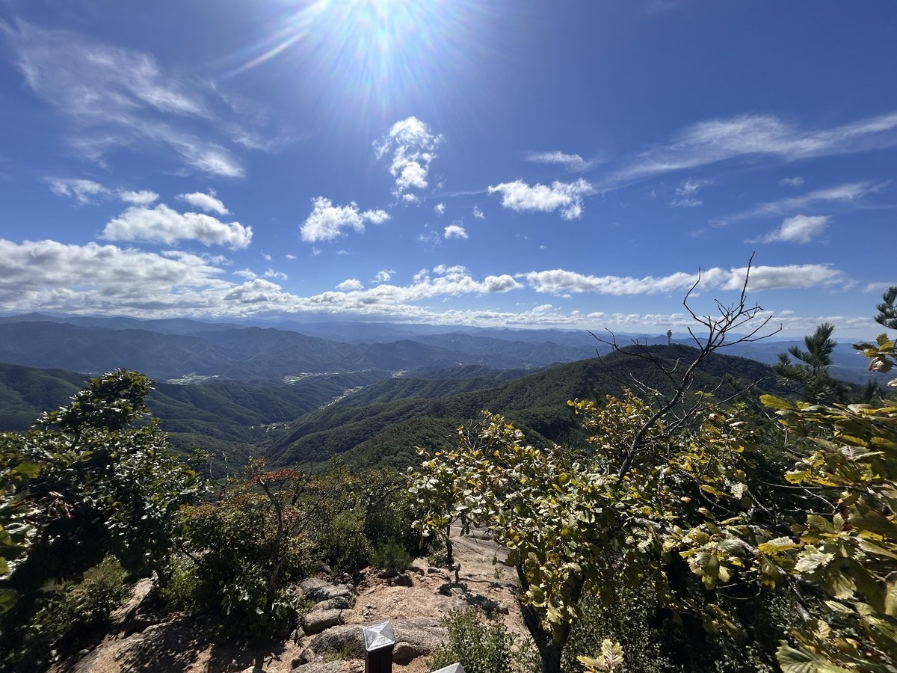
가리산은 홍천의 대표 산이자 100대 명산 중 비교적 조용한 축에 듭니다. 가리산자연휴양림을 기점으로 합수곡과 가삽고개를 지나 정상에 올랐다가 무쇠말재로 내려오는 7.2km 순환이 대표 코스입니다.
코스의 대부분은 참나무 숲과 계곡을 끼고 걷는 완만한 길입니다. 가삽고개 방향은 초반이 특히 편안한데, 고개 직전부터 경사가 붙기 시작합니다.
마지막 반전은 정상부입니다. 로프를 잡고 올라야 하는 가파른 암봉이 기다리고 있어, 숲길만 생각하고 오면 당황하게 됩니다. 이 구간 덕분에 정상 조망은 확실합니다.
등반기록
가리산자연휴양림 → 새득이봉 → 가삽고개 → 정상 → 무쇠말재 → 합수곡 → 휴양림 원점회귀
가리산자연휴양림에서 출발
토요일 아침 7시 46분, 가리산자연휴양림에서 산행을 시작했습니다. 휴양림 주차장이 무료라 부담 없이 차를 댈 수 있어 좋더군요.
등산로 입구에는 지난 사고 사례를 정리한 '등산 사고 안내도'가 서 있는데, 출발 전에 코스를 한 번 훑어보고 가면 도움이 됩니다.
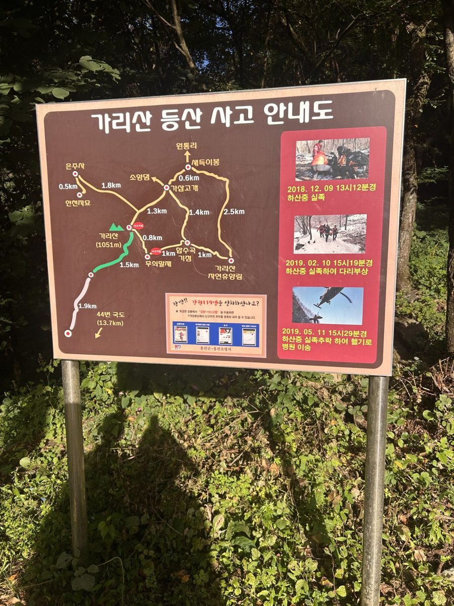
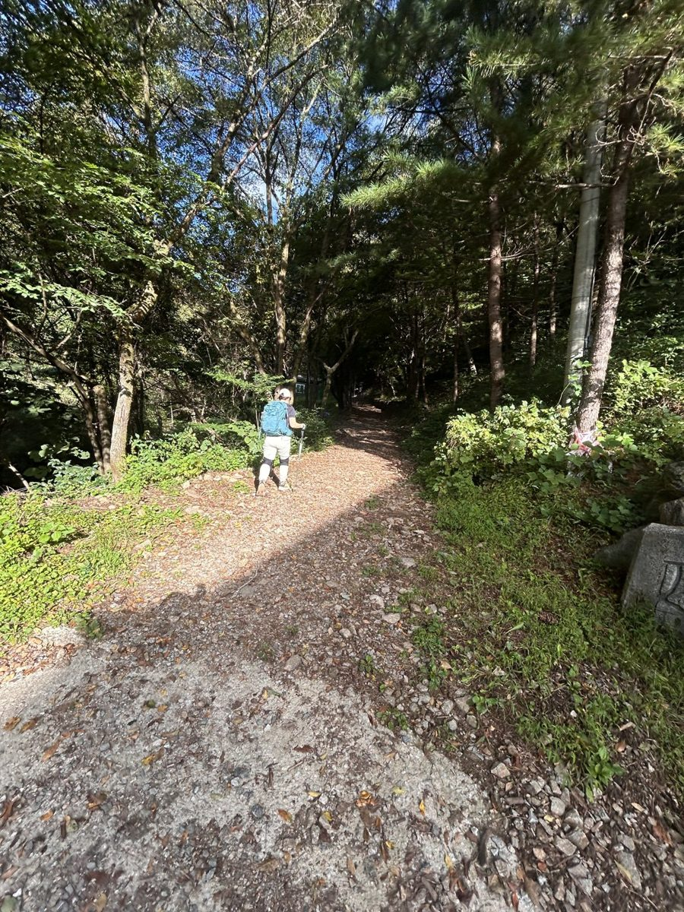
입구에는 모노레일도 놓여 있는데, 정상 부근 기상 시설에서 일하는 기상청 직원분들을 위한 것이라고 합니다.
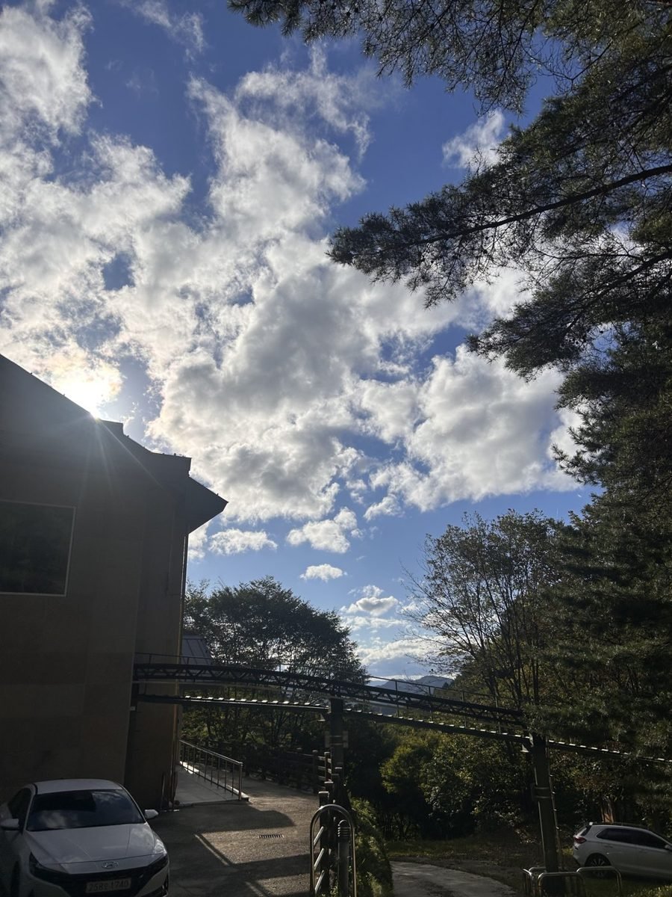
새득이봉을 지나 가삽고개로
휴양림에서 새득이봉으로 먼저 올라 능선을 타고 가삽고개로 향했습니다. 9시 40분쯤부터 나무 사이로 시야가 열리기 시작하더니, 하늘이 맑아 겹겹이 이어지는 산줄기가 끝까지 보이더군요.
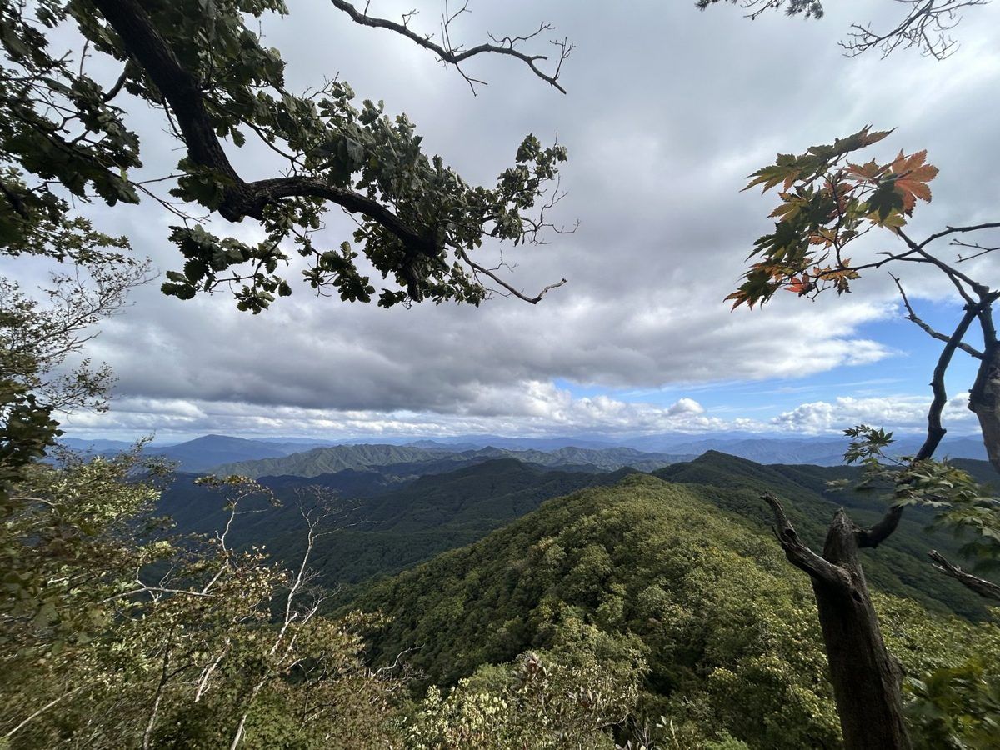
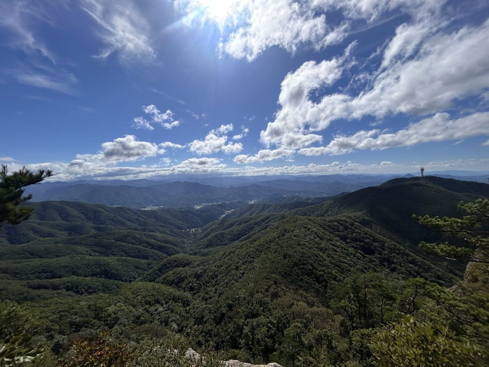
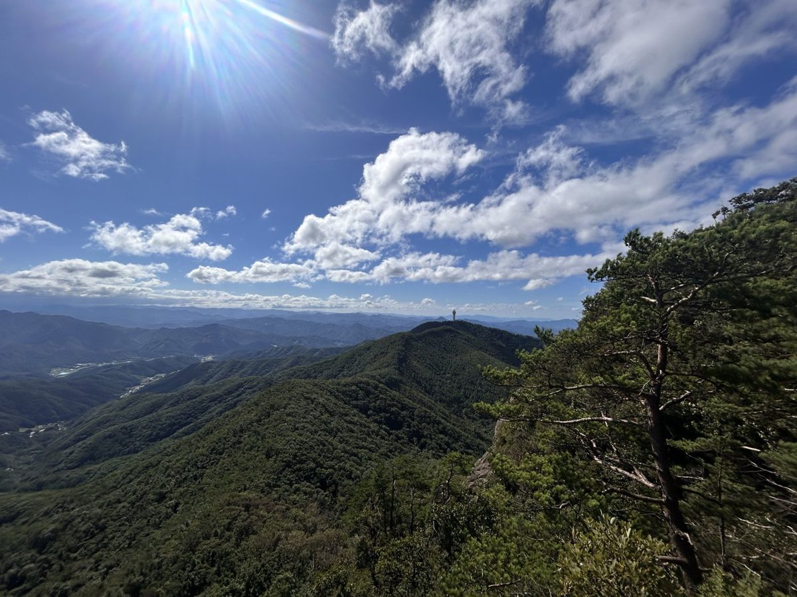
가리산 정상, 1,051m
정상 직전은 바위 구간이라 조금 긴장하면서 올랐고, 10시쯤 정상석 앞에서 인증샷을 남겼습니다.
날이 맑아서 정상에서는 멀리 소양호까지 내려다보였습니다.
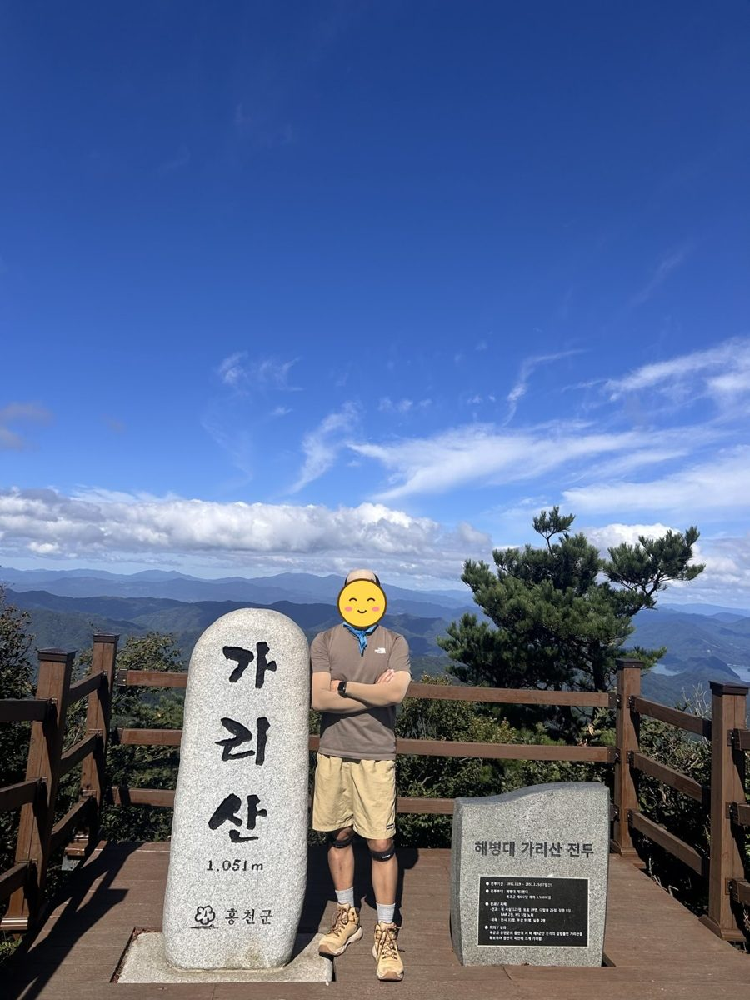
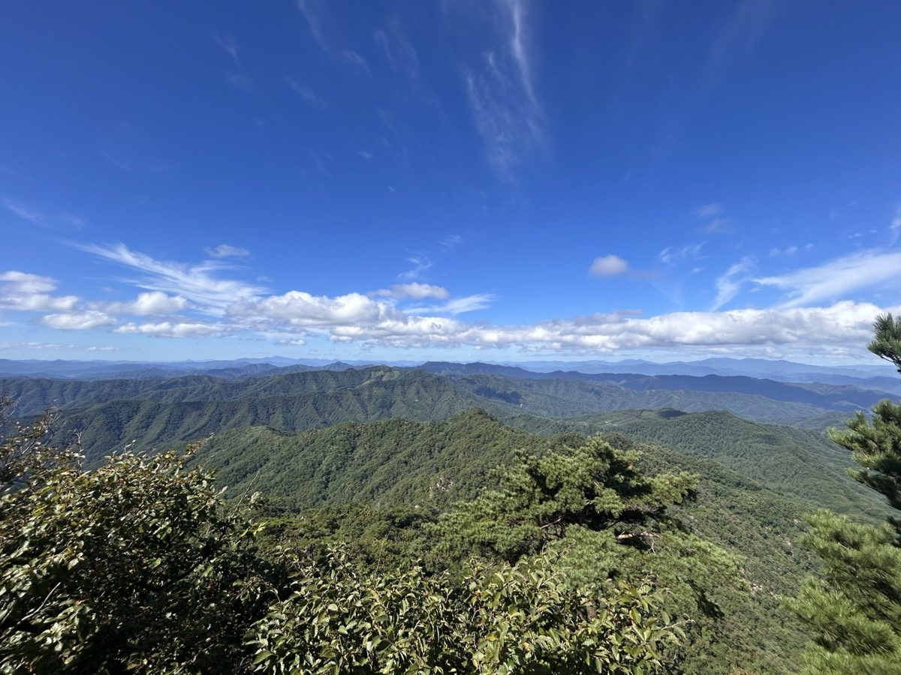
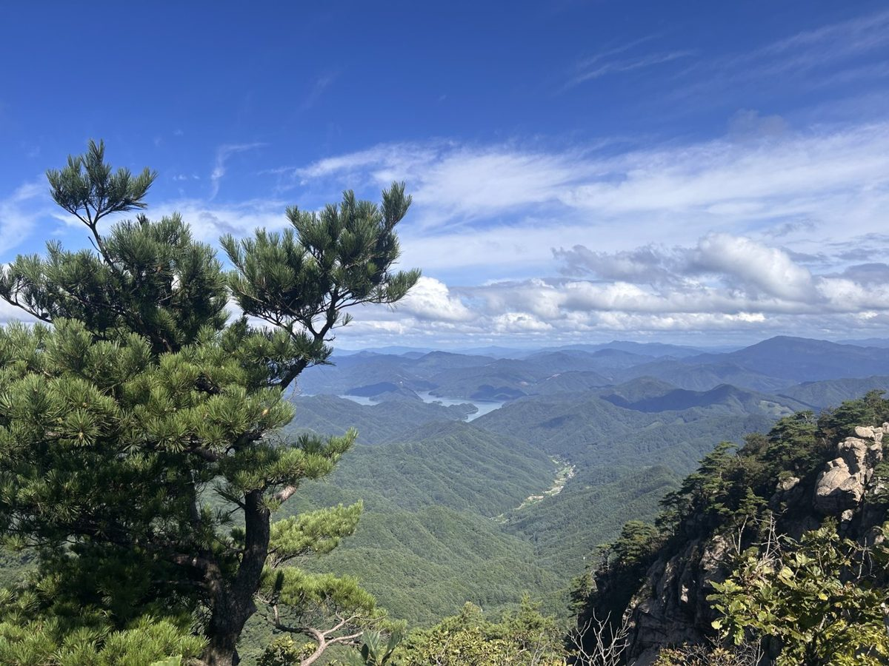
무쇠말재와 합수곡으로 하산
하산은 무쇠말재를 거쳐 합수곡 방향으로 내려와 휴양림으로 돌아왔고, 12시쯤 주차장에 도착했습니다. 총 8.27km, 4시간 10분이 걸린 산행이었네요.
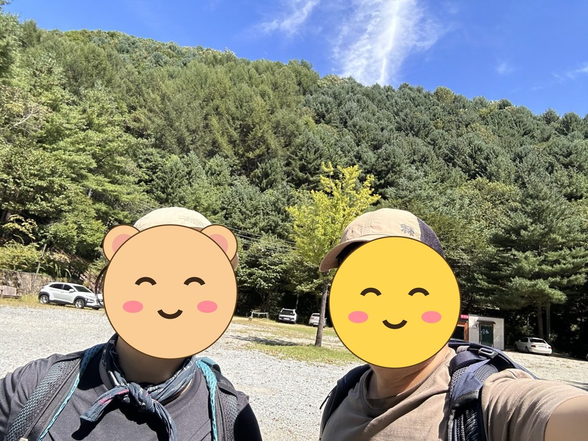
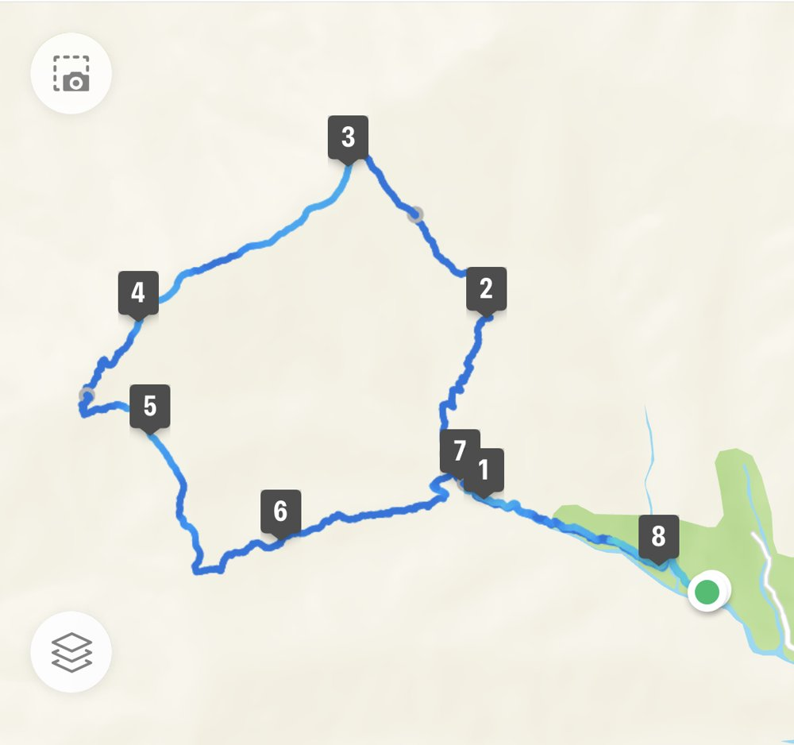
다음에 갈 사람을 위한 팁
- 가리산자연휴양림 주차장은 무료입니다.
- 새득이봉 쪽으로 올라 무쇠말재로 내려오면 대표 순환 코스(7.2km)보다 조금 길지만, 능선 조망을 길게 즐길 수 있습니다.
- 정상 직전에 바위 구간이 있어서 장갑을 챙기면 한결 편합니다.
- 날씨가 맑으면 정상에서 소양호까지 보이니, 가능하면 맑은 날을 골라 가 보시길 권합니다.
이 산의 포인트
- 가리산자연휴양림 기점 7.2km 순환 코스
- 정상 직전 로프 구간의 암봉
- 참나무 숲과 계곡을 끼고 걷는 완만한 초중반
- 주말에도 비교적 한산한 편
등산 코스
| 코스 | 거리 | 소요 | 난이도 |
|---|---|---|---|
| 휴양림 순환 (대표) 가리산자연휴양림 → 합수곡 → 가삽고개 → 정상 → 무쇠말재 → 원점 |
약 7.2km | 3시간 30분(휴식 포함 4시간 30분) | 중 |
인증장소
가리산 정상 표지석 앞에서 인증합니다. 정상이 좁은 암봉이라 주말에는 촬영 대기가 생깁니다.
가는 길
- 자가용
- 가리산자연휴양림 주차장을 이용합니다. 휴양림 입장료가 있습니다.
- 대중교통
- 홍천 시외버스터미널에서 접근하되 배차가 드물어 택시를 쓰는 경우가 많습니다.
주차장
- 가리산자연휴양림 주차장강원 홍천군 두촌면 천현리
가장 일반적인 들머리입니다. 휴양림 안쪽 등산로 입구까지 차로 더 들어갈 수 있으나 주말에는 아래에 세우는 편이 낫습니다.
- 합수곡 등산로 입구 노변 주차강원 홍천군 두촌면 자은리
휴양림을 거치지 않는 코스입니다. 정식 주차장이 아니라 길가에 세우므로 농로와 진입로를 막지 않도록 주의하세요.
주차 요금과 면수는 자주 바뀌고 성수기에는 임시 주차장·셔틀이 운영되기도 합니다. 출발 전에 지도 앱이나 공원 사무소로 한 번 더 확인하세요.
맛집
홍천은 화로에 굽는 닭갈비와 메밀막국수의 고장입니다. 춘천식보다 국물기가 적고 숯불향이 강한 편이며, 한우 사육이 많아 등심·갈비를 내는 집도 흔합니다.
- 산더미 미성돼지국밥 홍천점강원 홍천군 홍천읍
직접 추천하는 집입니다. 순대와 무침회가 함께 나옵니다.
- 춘천통나무집닭갈비들머리에서 18.2km강원특별자치도 춘천시 신북읍 신샘밭로 763
- 오수물막국수들머리에서 19.7km강원특별자치도 춘천시 신북읍 맥국2길 15
- 뚜레한우 홍천본점들머리에서 6.6km강원특별자치도 홍천군 두촌면 한계길 110
- 장호더그릴(장호숯불닭갈비)들머리에서 18.7km강원특별자치도 춘천시 신북읍 신샘밭로 682
- 산수야들머리에서 19.5km강원특별자치도 춘천시 만군길 12
한국관광공사에 등록된 음식점입니다. 맛집 순위가 아니며, 영업시간과 휴무일은 바뀔 수 있으니 먼 길이라면 미리 전화해 보세요.
언제 가면 좋은가
봄가을이 좋습니다. 정상 암봉 구간이 있어 겨울 결빙기와 비 온 뒤에는 특히 주의해야 합니다.
알아두면 좋은 것
- 정상 직전 로프 구간 때문에 장갑을 챙기는 편이 좋습니다.
- 공식 소요시간은 3시간 30분대지만 휴식과 정상 대기를 감안하면 4시간 30분을 잡으세요.
- 일행에 초보자나 아이가 있으면 5시간까지 예상하세요.